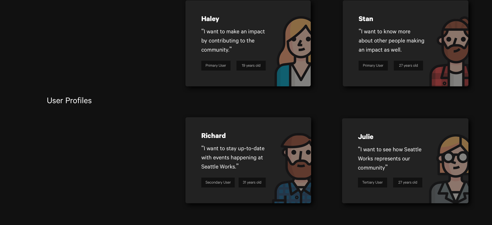
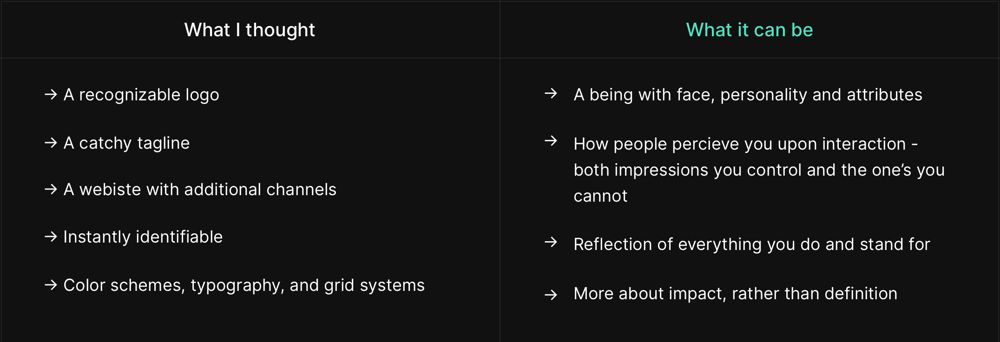
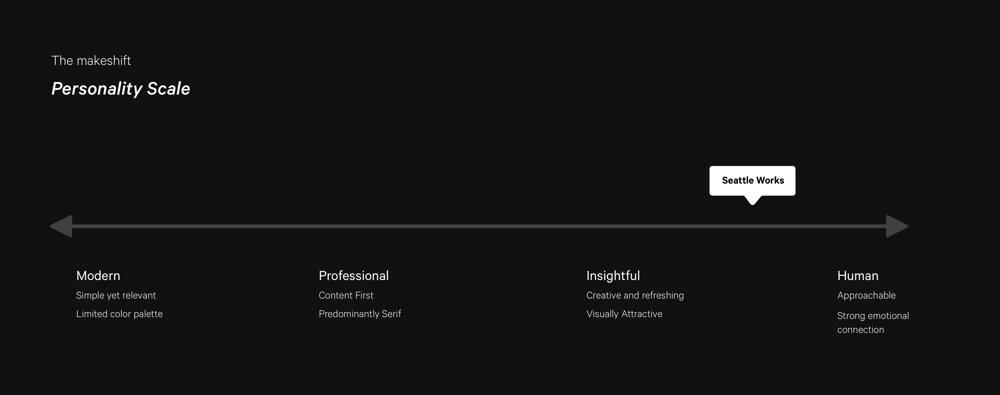
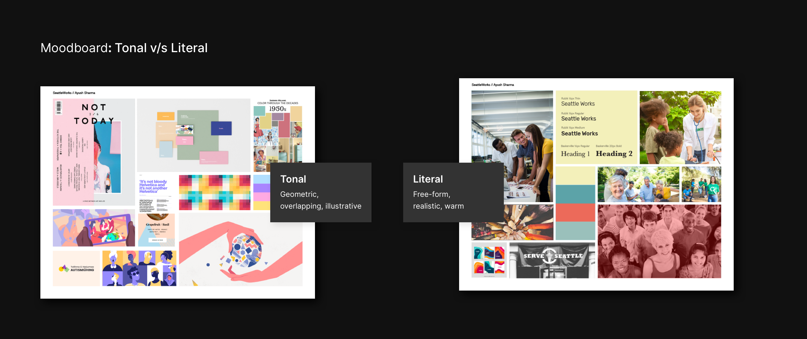
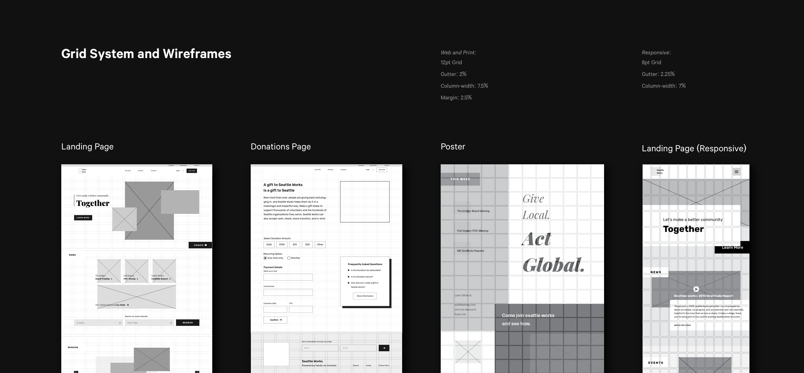
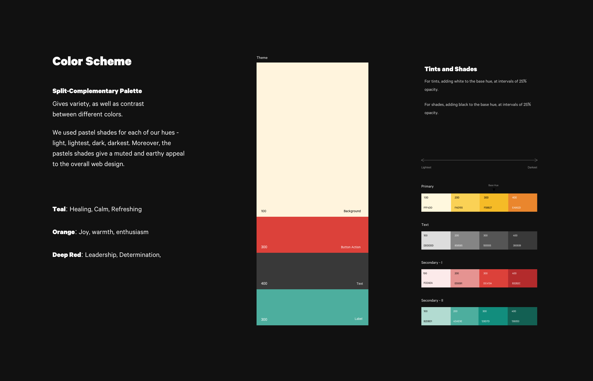
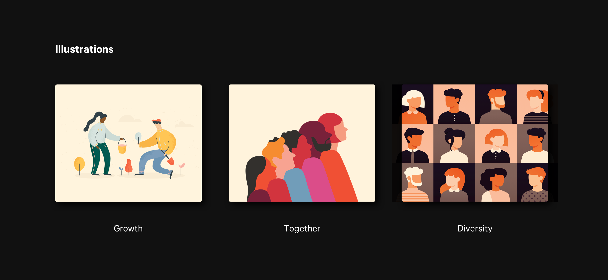
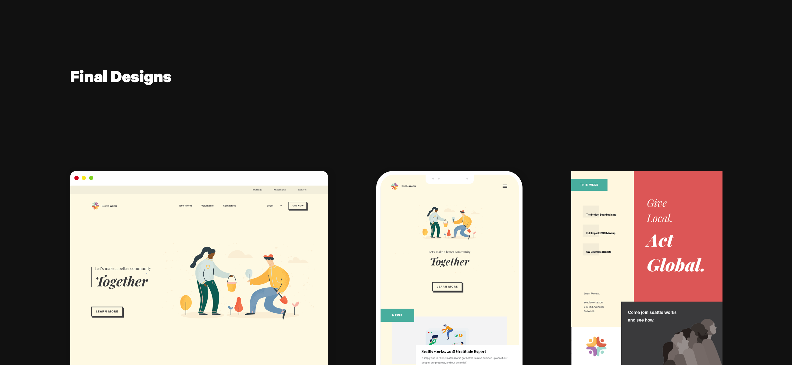

Domain
Visual Communication, branding, identity design
Type
Graduate Coursework [Individual]
Timeline
Jan, 2019 - Mar, 2019 [3 Months]
1. Background
Seattle works is a non-profit organization based in the Greater Seattle Area and are centered around connection volunteers across the city, to ultimately make a better community. Before getting straight into the visual design, it was important to ask myself - "Does SeattleWorks even need a new identity?" Once I knew what was missing in their current system, only then I could've filled the voids.
1.1 Current Design
Below are some of the key issues that were evident straight away from a visual communication perspective: [Refer the carousel below for a detailed description.]
- Consistency
A visual experience should feel consistent across pages, tabs, interfaces, and platforms. That's what establishes a connection with the people and ensures continuity. - Hierarchy
The order with which user processes information on a page is crucial; we don't want people distracted by visual elements amidst important content. - Personality
The visual design should be able to speak user's language, and the user should be able to understand it - it is important to elicit the brand's values through visual artifacts.
1.2 Who is it for?
The user base Seattle Works predominantly targets was 'Youth' - which means teenagers, people in their 20s, even 30s. However, it was more than just this age bracket - the website might also used by the people currently at Seattle works. Therefore beyond the primary users, the secondary and tertiary audience includes current employees and even competitors. The visual design is the 'face' that interacts with the entire world and one thing that really stuck with me during the lectures was -
'You cannot be everything to everyone.'

2. What makes a 'Brand'
I walked into the class knowing that I am acquainted with what it means to design systems, but this was more than conjuring up yet another visual system - it was partly also about connecting with the brand emotionally to express its goals throught the medium of design. Sometimes your previous domain knowledge can get in the way of learning new things. Therefore, I made sure to leave behind everything I knew and start fresh with what it means to create a 'brand' and an 'identity'. I would be lying if I didn't think of it as a design system in the begining.
2.1 Mission Statement
With a clearer picture of what a brand means, I was somewhat sure how to proceed. My goal was to engender a set of emotions through design, specifically the emotions of 'Growth', 'Connection', 'Diversity', and 'Care'. Therefore, I decided to come up with a new mission statement for Seattle works which laid the foundation for everything, that would become the foundation of my design to come.
"Let's build a community, together."
2.2 Personaility
I began thinking of Seattle Works as a human being - if I were to talk to them right now what would be my first impressions about its personality, behavior, mindset, and what would that make me feel as well. I decided to come up with some random personality traits and keywords, trying to fit Seattle Works somewhere along the line.
2.3 Moodboard
Moodboards not only do a great job visualizing the overall theme of the brand, but also act as a check towards whether that mood aligns with the intended vision of the brand. Moreover, it also helps bridge the gap between language and visuals - it ensures everyone is on the same page before proceeding into the design phase. Therefore, I went with two distinct moodbards - a tonal and a literal board.
I went ahead with the literal one - while compiling images for the board, I sensed a strong color scheme, as well as abstract concepts such as 'overlap' denoting 'togetherness', which laid the stepping stones for wireframes and final designs.
3. Communication
3.1 Logo Design
Logos can act as a face and an identifying marker for a product. Consumer attachment is everything when creating a logo, and hence, I felt that the companies core beliefs should be instantly relfected in the logo design. Keeping in mind the key words that define Seattle Works - 'Growth', 'Connection', 'Diversity', and 'Care'.
3.2 Grid systems and Layout
Question: How do you decide on a grid system?
Solution: You do not, your content does.
Fixating on a grid system beforehand only led me to alter my layout choices and content. Therefore, I let the content inform my grid choice. I fiddled around with 12pt and 16pt grids, and ultimately I found the 12pt grid to have the balance between complexity and flexibility. In addition, it is practically impossible to have absolute widths for columns/margins/gutters due to the growing variation in resolutions today. So I decided to take a relative approach from the very beginning.
3.3 Typography
For me, typography makes or breaks a design. Text is one of the primary ways that users communicate with a brand. While people may not appreciate or admit it straightaway, type matters - and that's the beauty of it. It almost becomes invisibile when it strikes that connection with the user. In addition, visual communication is like a pipeline - every previous decision affects the next design choice.
- Legibility: The traits of a typeface
My goal was not to find a legible typeface. However, the large open counters, small x-heights, and subtle weight changes - all of that made our typeface choice legible as well as emotional. - Readability: The goal of a typeface
Neue Haas Unica has over 12 weights, which obviated the need for any additional font for this system. It provides enough flexibility, as well as retains the properties that makes it unique.
3.4 Color
I wanted to use colors to mirror 'action' - as a non-profit, Seattle Works is constantly bringing about change to the community. Out of all the palettes, I felt the Split-complementary palette resonated with me the most. For one, it gave variety as well as contrast, but also contrast between warm and cool colors helped a sense of 'action'. A warm and energetic background contrasted almost perfectly with a bold, but cool foreground.
Use of pastel shades also played an important role to give an 'earthy' feel to the overall visual design. Moreover, each hue had a meaning behind it - the light orange for Joy and Warmth; the teal accent for a calm and refreshing look; and a deep red to show conviction and determination in what Seattle Works stands for.
"Colors, like features, follow change of emotions."
3.5 Illustrations and Imagery
"Why did I pick illustrations over stock photography?"
I feel illustrations can freely ignore reality and express abstracts themes and concepts, not to forget the control you have as 'you' are creating them. As we see an illustration beside some text, it can make reluctant users curious as well - it can engender a feeling that the brand actually goes the extra mile, even to convey simplest of messages.
I also feel since I am not selling a product, it makes more sense to capture the theme rather than some people just smiling in a bright background. Finally, I wanted to show how much Seattle Work cares about its users; I wanted to establish a deeper, more personalized connection using Illustrations.
[Resource: Humaans Illustrations, available online]
3.6 Putting it all together
After laying down the foundation, it was just a matter of drag and drop to put down the final pieces. You can view the detailed designs in the link below, along with the 'Brand Guidelines Book'.
4. Takeaways
4.1 Key learnings
- Design System != Design Language
Walking into this project, I thought of a design language as something similar to a design system; I learnt these are completely different things. Design language is more about laying the stepping stones towards a design system, a language that your brand speaks and users understand. - Never take your designer/researcher hat off
While I was instructed that the class is more about learning design, it was hard not to be cognizant of what users want. I tried to make it not just about a designer designing something, at every step I kept the target users at the center, rather than just brushing up my skills as a visual designer.
4.2 What's next
- A definitive research is still wanting - thorough competitive analyis, brand audit survey, understanding employee needs as well.
- Next natural step would be to be more precise about guidelines and rules, lay them out, and transform the design language into a coherent design system, which can be used by other people as well.